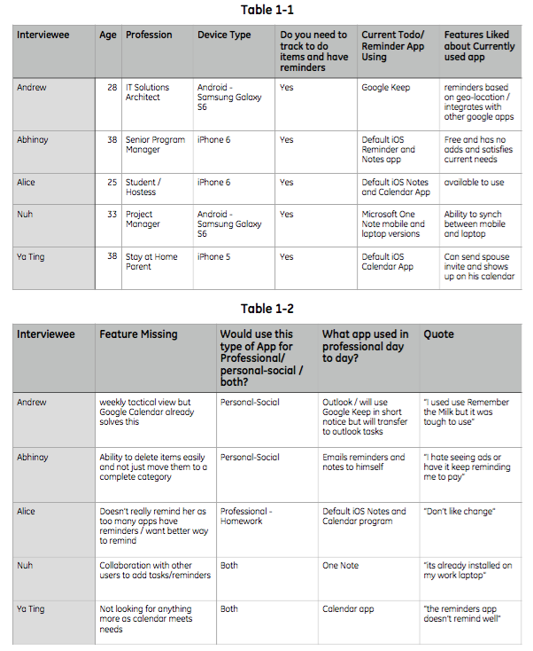
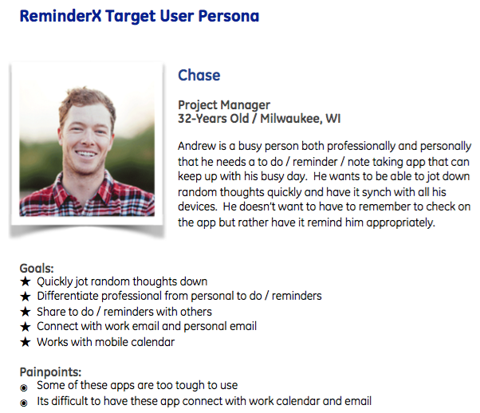
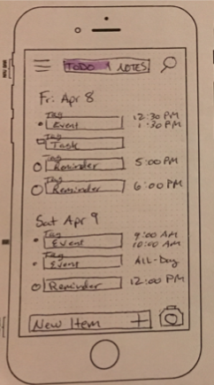
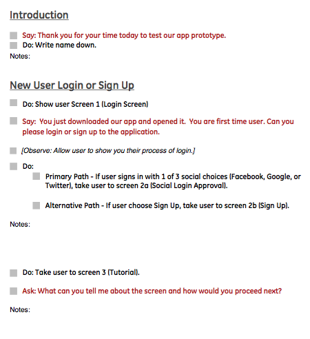
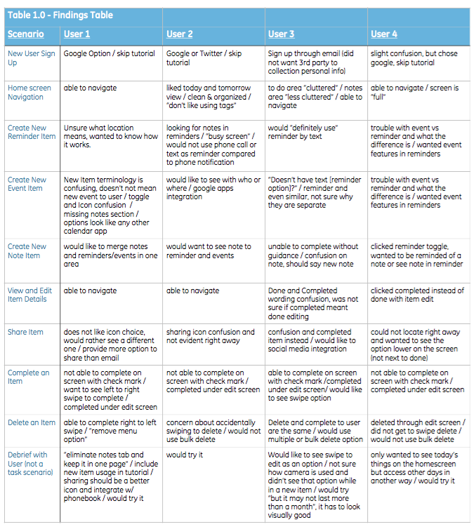
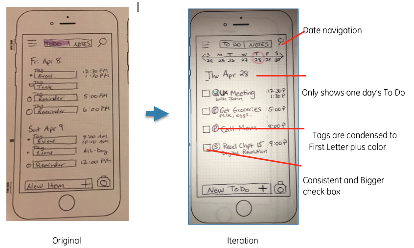

Provide a solution for parents/guardians to manage their child’s lunch account and easily plan lunch meals. The solution must be simple to setup and use and provide on the go accessibility.
Problem
Actions (My Approach)
My approach to address the design goal was the following actions:
User Journey Map
I started with empathy of the user by creating a user journey map.
 Site Map
Creating a sitemap, I could understand the hierarchy of content and where navigation needed to be. I was able to address a potential interaction issue when viewing content at a school level.
Wireframe
Building a wireframe, I was able to visualize the connection between the information and features.
Lo & Hi Fidelity Prototype
In creating the low and high fidelity prototypes, I was able to get quick feedback. The initial prototype tests revealed that adding payments and notifications area required quicker access which then adjustments were made.
Iterate
Continually to iterate and improve incrementally.
Results
This User Experience Design stepwise approach allowed me to distill the right insight to provide a fast prototype that addresses user needs and provides ReminderX the product roadmap critical to their product line.

Lessons Learned
This project has allowed me to understand more about UI design patterns and how it affects the user experience. I was able to experiment with micro interactions which is critical in bringing simplicity and delight into a design solution.